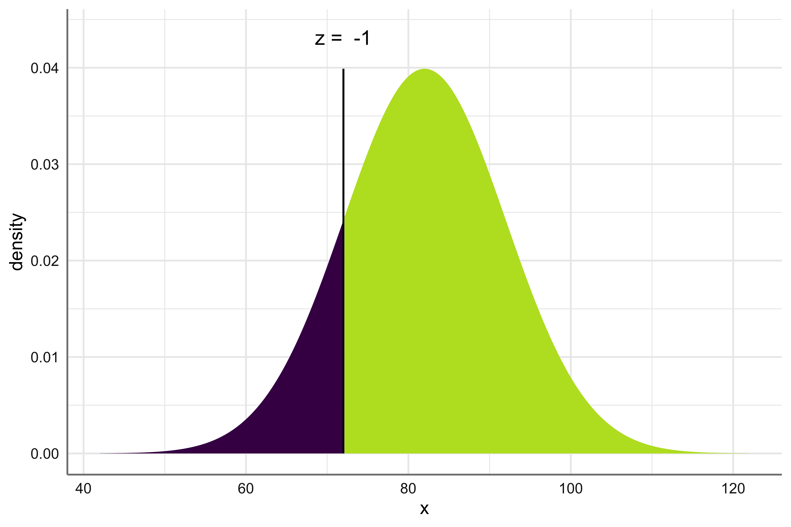
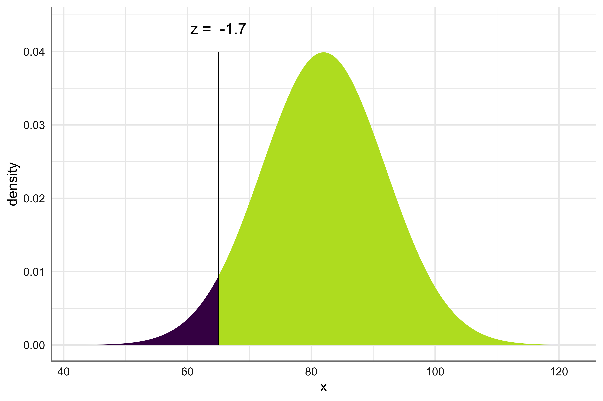
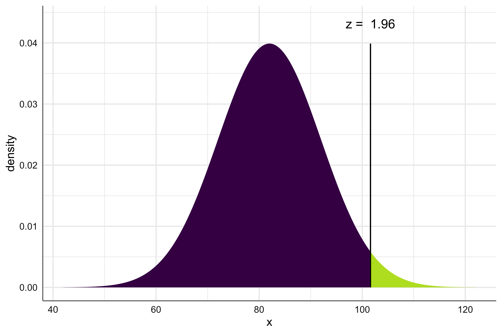
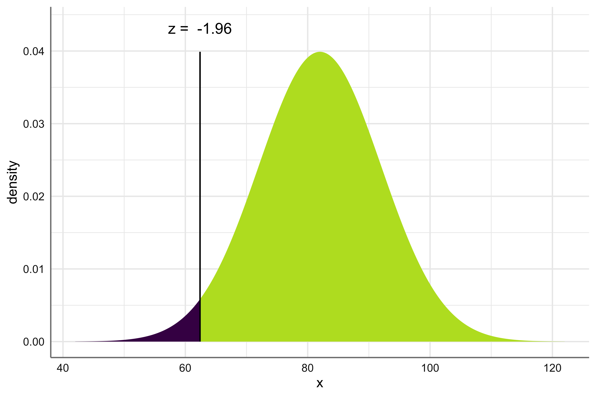
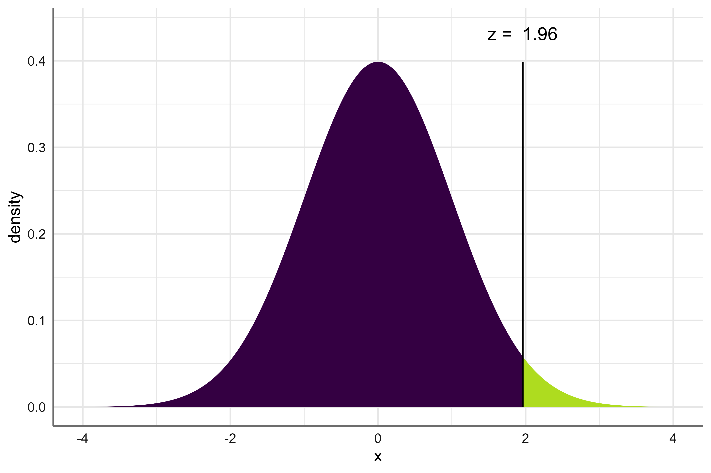
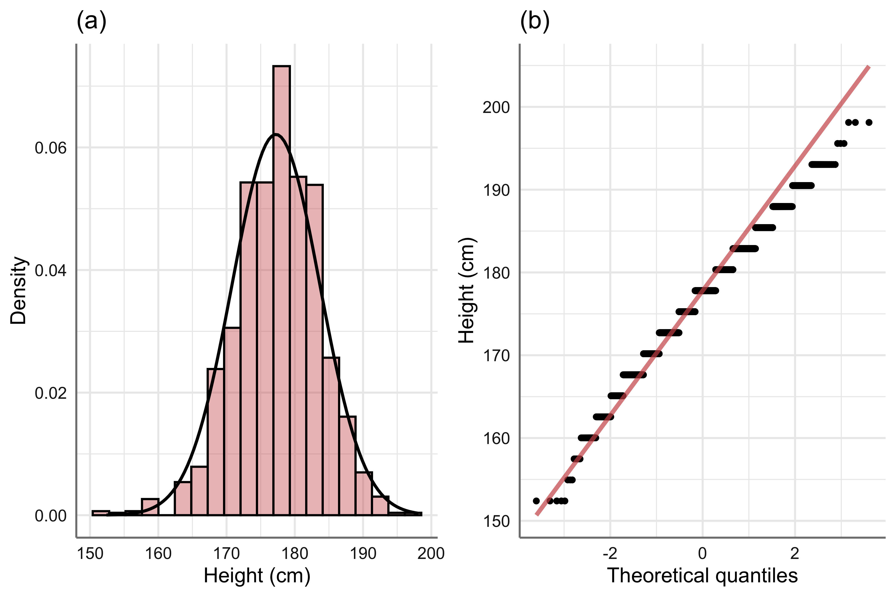
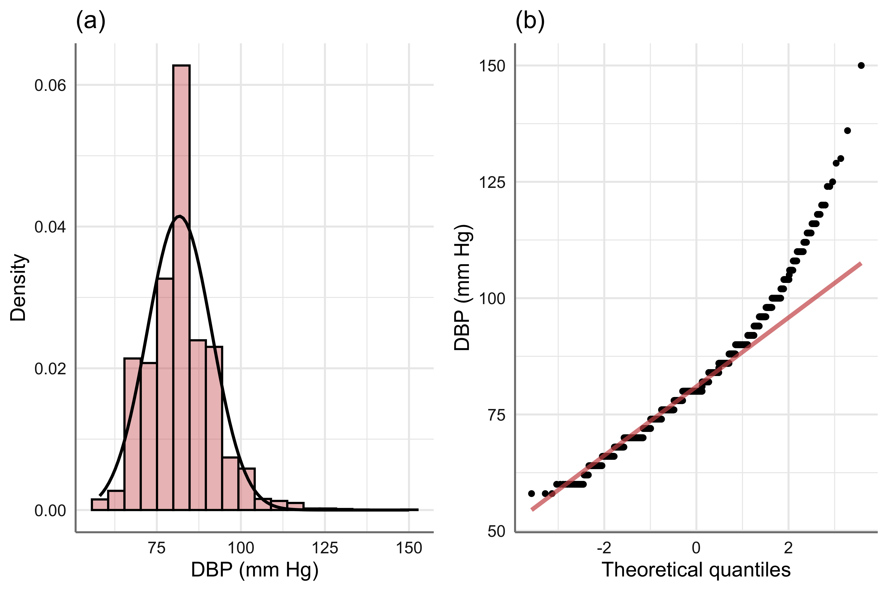
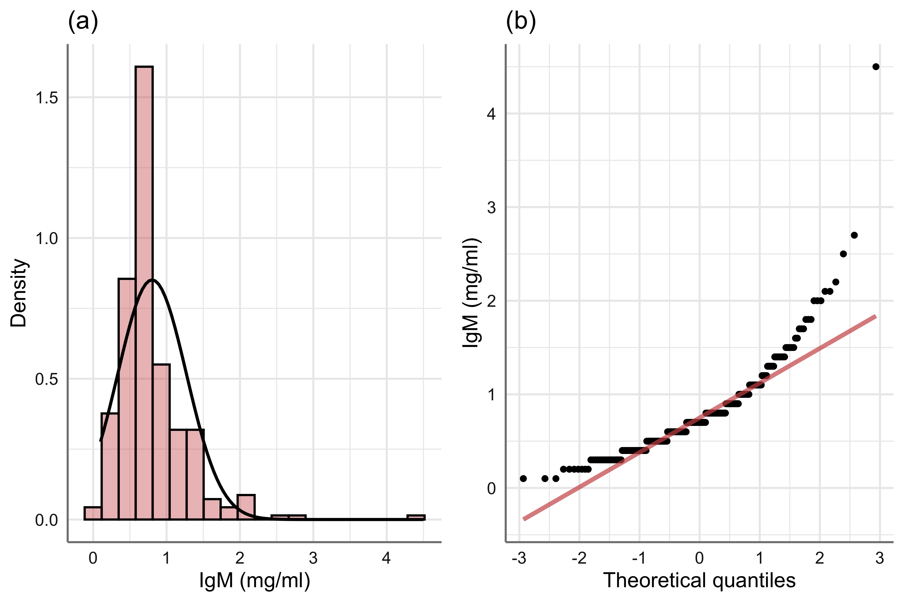
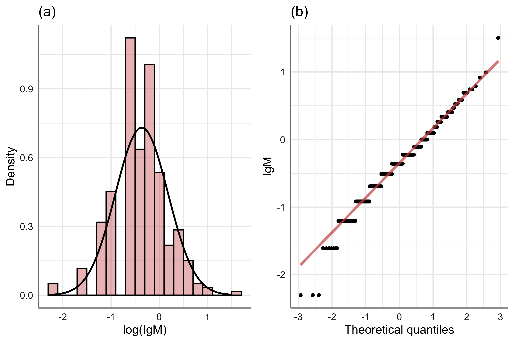
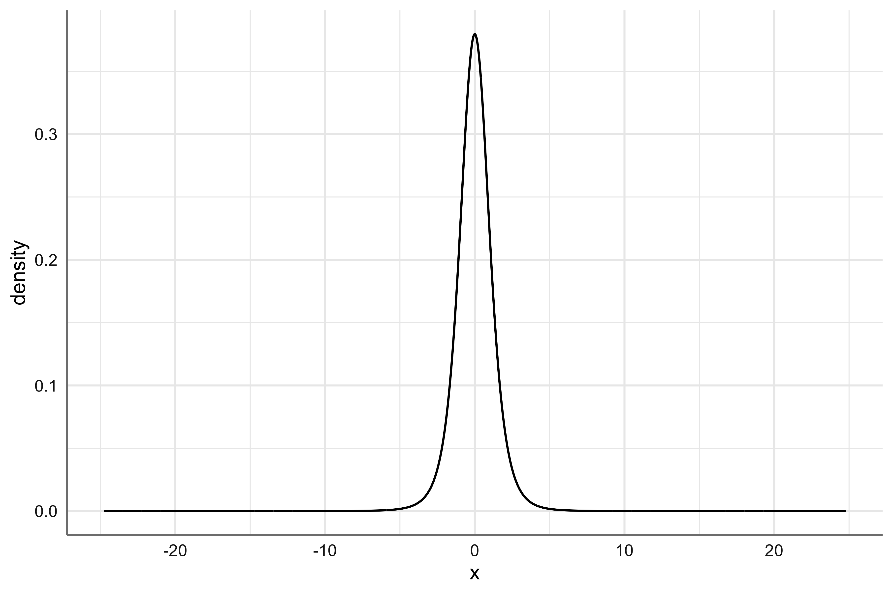

rm(list = ls())
library(tidyverse)
library(rstatix)
library(easystats)
library(ggfortify)
library(ggpubr)
library(jtools)
library(pubh)
library(sjlabelled)
library(sjPlot)
library(sjmisc)
import::from(latex2exp, TeX)
import::from(epiDisplay, ci)
import::from(mosaic, xpnorm, xqnorm)
theme_set(sjPlot::theme_sjplot2(base_size = 10))
theme_update(legend.position = "top")
options('huxtable.knit_print_df' = FALSE)
options('huxtable.autoformat_number_format' = list(numeric = "%5.2f"))
knitr::opts_chunk$set(comment = NA, dpi = 300,
fig.width = 6, fig.height = 4)4 Introduction to Inferential Statistics
4.1 Overview
To infer general conclusions at a population level from relatively small samples is important to have an unbiased sampling technique, so the sample represents the original population.
As an introduction to inferential statistics, we will look at sampling distributions, the concept of standard error and estimation of confidence intervals for continuous variables. We will also look at some aspects associated with study design including basic sample size calculations.
Once you have completed this laboratory, you should feel comfortable:
- Obtaining random samples from populations.
- Estimating reference range.
- Estimating confidence intervals around the mean.
- Estimating confidence intervals around proportions.
- Estimating confidence intervals around counts.
- Estimating sample sizes for studies comparing means.
- Estimating sample sizes for studies comparing proportions.
Summary of New Commands
| Command | Library | Function |
|---|---|---|
| as.numeric | base | Coerces objects of type “numeric” |
| bst | pubh | Estimates bootstrap confidence intervals for the mean |
| ci | epiDisplay | Estimates confidence intervals |
| gf_dist | ggformula | Constructs density plots for theoretical distributions |
| n.for.2means | epiDisplay | Sample size for comparing two means |
| n.for.2p | epiDisplay | Sample size for comparing two proportions |
| power.t.test | stats | Power calculations for means |
| prop_ord | pubh | Calculates a proportion from OR and a second proportion |
| reference_range | pubh | Calculated the reference interval |
| slice_sample | dplyr | Takes random samples |
| t_test | rstatix | Performs \(t\)-tests |
| xpnorm | mosaic | Calculates probabilities for the Normal distribution |
| xqnorm | mosaic | Calculates \(z\) values for the Normal distribution |
4.2 Introduction
To understand probability distributions, we will use the following variables
| Variable | Distribution | Dataset |
|---|---|---|
chd |
Binomial | wcgs |
ncigs |
Poisson | wcgs |
height |
Normal | wcgs |
IgM |
Log-Normal | IgM (from ISwR) |
age |
Not normal | wcgs |
dbp |
Not normal | wcgs |
We start by loading data into our session:
wcgs = read_rds('data/wcgs.rds')
data(IgM, package = "ISwR")IgM is a vector, hence we will create a dataset which includes the vector.
serum = tibble(IgM)4.2.1 The Normal distribution
Example
A normal curve was calculated from the diastolic blood pressures of 500 men (mean 82 mm Hg, standard deviation 10 mm Hg). What is the probability of finding a man with a DBP > 72 mm Hg if we assume a normal distribution?
Before we answer this problem, we need to think about our answer. By definition, the mean value is at the centre, so the area under the curve (AUC) AUC = 50% to each side. As the value of 72 is less than the mean (82), we already know that the solution has to be greater than 50%.
The function xpnorm gives us the AUC to the left of the given value (meaning less than). As the total AUC = 1, to find probabilities higher than we can subtract from 1.
1 - xpnorm(72, mean = 82, sd = 10)
[1] 0.8413447
Exercise
What is the probability of finding a man with a DBP < 65 mm Hg in our current example?
Code
xpnorm(65, mean = 82, sd = 10)
[1] 0.04456546What would be the value of DBP which would contain 97.5% of the population (to the left of the curve)?
This is the opposite problem than the previous one. Now we know the probability and would like to know the value that would contain that probability. For finding quantiles in the normal curve, we use qnorm.
xqnorm(0.975, mean = 82, sd = 10)
[1] 101.5996
Exercise
What would be value of DBP which would contain 2.5% of the population (to the left of the curve)?
Code
xqnorm(0.025, mean = 82, sd = 10)
[1] 62.40036So, the limits that would contain 95% of the population around the mean are:
reference_range(82, 10) %>%
round(2) lower.ri upper.ri
1 62.4 101.6Which \(z\)-value would contain 97.5% of the standard normal curve?
xqnorm(0.975)
[1] 1.959964
Note
For a normal distribution: 95% of the population is within \(\approx 2\) standard deviations around the mean; 99% of the population is within \(\approx 3\) standard deviations around the mean.
Exercise
Construct a table of the following statistics: mean, standard deviation, median and skewness for the variable height from the wcgs dataset.
Code
tab1 = wcgs %>%
descr(height) %>%
select(label, mean, sd, md, skew)
labs = c("", "Mean", "SD", "Median", "Skewness")
names(tab1) = labs
tab1 %>%
as_hux()| Mean | SD | Median | Skewness | |
| Height (cm) | 177.24 | 6.42 | 177.80 | -0.20 |
Exercise
Construct a histogram with a normal density plot and a QQ-plot for the variable height from the wcgs dataset.
Code
p1 = wcgs %>%
hist_norm(~ height, title = "(a)") %>%
axis_labs()
p2 = wcgs %>%
qq_plot(~ height, title = "(b)") %>%
axis_labs()
autoplot(list(p1, p2))
Question
What are your conclusions?
Answer
Height in males follows a normal distribution.
Exercise
Is DBP normally distributed in the subset of males who did not have a CHD event in the wcgs dataset? Construct a table of the following statistics: mean, standard deviation, median, and skewness for the variable dbp from the wcgs dataset.
Code
tab2 = wcgs %>%
descr(dbp) %>%
select(label, mean, sd, md, skew)
names(tab2) = labs
tab2 %>%
as_hux()| Mean | SD | Median | Skewness | |
| DBP (mm Hg) | 82.02 | 9.73 | 80.00 | 0.93 |
Exercise
Construct a histogram with a normal density plot and a QQ-plot for the variable dbp from the wcgs dataset.
Code
p1 = wcgs %>%
filter(chd == "No CHD") %>%
hist_norm(~ dbp, title = "(a)") %>%
axis_labs()
p2 = wcgs %>%
filter(chd == "No CHD") %>%
qq_plot(~ dbp, title = "(b)") %>%
axis_labs()
autoplot(list(p1, p2))
4.2.2 Log-normal distribution
Exercise:
Construct a table of the following statistics: mean, standard deviation, median and skewness for the variable IgM from the serum dataset.
Code
tab3 = serum %>%
descr(IgM) %>%
select(label, mean, sd, md, skew)
names(tab3) = labs
tab3 %>%
as_hux()| Mean | SD | Median | Skewness | |
| IgM | 0.80 | 0.47 | 0.70 | 2.57 |
Exercise
Construct a histogram with a normal density plot and a QQ-plot for the variable IgM.
Code
p1 = serum %>%
hist_norm(~ IgM, title = "(a)",
xlab = "IgM (mg/ml)")
p2 = serum %>%
qq_plot(~ IgM, title = "(b)",
ylab = "IgM (mg/ml)")
autoplot(list(p1, p2))
Question
What are your conclusions?
Answer
IgM is not normally distributed as it has a positive skew. The QQ-plot shows deviations from normality and shows a J-shape.
Exercise
Construct a histogram with a normal density plot and a QQ-plot for log-transformed version of IgM. (tip: use ~ log(IgM) in your formula).
Code
p1 = serum %>%
hist_norm(~ log(IgM), title = "(a)")
p2 = serum %>%
qq_plot(~ log(IgM), title = "(b)")
autoplot(list(p1, p2))
Question
What are your conclusions?
Answer
When log-transformed, IgM follows a normal distribution.
4.3 Random Sampling
When we take a sample, we calculate a statistic, an estimate of a parameter in the original population where the sample was initially taken.
This process, of statistical inference is reliable and robust if the process is not biased. One way to avoid bias is through random sampling. The function sample allows us to take random samples from variables.
To have the same results, we will set up a seed before the sampling
set.seed(576)Look at the statistics from random samples with decreasing sample size.
rbind(
wcgs %>% estat(~ height),
wcgs %>% slice_sample(n = 100) %>%
copy_labels(wcgs) %>% estat(~ height),
wcgs %>% slice_sample(n = 50) %>%
copy_labels(wcgs) %>% estat(~ height),
wcgs %>% slice_sample(n = 25) %>%
copy_labels(wcgs) %>% estat(~ height),
wcgs %>% slice_sample(n = 10) %>%
copy_labels(wcgs) %>% estat(~ height)
) N Min. Max. Mean Median SD CV
1 Height (cm) 3154 152.40 198.12 177.24 177.80 6.42 0.04
2 Height (cm) 100 160.02 193.04 176.12 175.26 6.74 0.04
3 Height (cm) 50 160.02 187.96 177.09 177.80 6.18 0.03
4 Height (cm) 25 165.10 193.04 178.21 180.34 7.06 0.04
5 Height (cm) 10 170.18 185.42 179.32 179.07 5.11 0.03So, even with a sample size as small as \(n = 25\), the statistics are still a good estimate of the original values in the population.
Height is a continues variable that follows a normal distribution, what is the case for categorical variables?
wcgs %>% freq_table(chd)# A tibble: 2 × 3
chd n prop
<fct> <int> <dbl>
1 No CHD 2897 91.9
2 CHD 257 8.1wcgs %>% slice_sample(n = 100) %>% freq_table(chd)# A tibble: 2 × 3
chd n prop
<fct> <int> <dbl>
1 No CHD 88 88
2 CHD 12 12wcgs %>% slice_sample(n = 50) %>% freq_table(chd)# A tibble: 2 × 3
chd n prop
<fct> <int> <dbl>
1 No CHD 48 96
2 CHD 2 4wcgs %>% slice_sample(n = 25) %>% freq_table(chd)# A tibble: 2 × 3
chd n prop
<fct> <int> <dbl>
1 No CHD 24 96
2 CHD 1 4wcgs %>% slice_sample(n = 10) %>% freq_table(chd)# A tibble: 2 × 3
chd n prop
<fct> <int> <dbl>
1 No CHD 9 90
2 CHD 1 104.4 Confidence Intervals
Reference range and confidence intervals are not the same.
The reference range is about the limits that would contain 95% of the observations in a sample or population.
The confidence interval is about the limits that would contain a given proportion (most of the times, 95%; sometimes, 99%) of the true value of a given parameter (e.g., the mean) in a population.
For the calculation of the reference range, we used about two standard deviations (\(\sim\) 1.96) around the mean (as we assumed a normal distribution). For the confidence interval, we use about two standard errors around the mean.
4.5 \(t\)-distribution
The \(t\)-distribution is also bell shaped, but with a heavier tail. It has one more parameter than the normal distribution: the degrees of freedom (df). For our current example:
\[df = n-1\]
where \(n\) is the sample size. As the sample size increases, the \(t\)-distribution is almost the same as the normal distribution (for \(n>30\)).
For illustration purposes, let’s take a look at the density plot of a \(t\)-distribution.
gf_dist("t", df = 5)
In the next lab, we will learn about hypothesis testing. In R every time we do hypothesis testing, a confidence interval is also shown.
A calculation of the 95% CI for continuous variables can be estimated with the argument detailed = TRUE in t_test. For example, for height the CI is:
wcgs %>%
t_test(height ~ 1, detailed = TRUE) %>%
as.data.frame() estimate .y. group1 group2 n statistic p df conf.low conf.high
1 177.2355 height 1 null model 3154 1549.714 0 3153 177.0112 177.4597
method alternative
1 T-test two.sidedWe can also use the function ci from epiDisplay:
wcgs %$% ci(height) n mean sd se lower95ci upper95ci
3154 177.2355 6.422881 0.1143666 177.0112 177.45974.5.1 Introduction to Bootstrap
The advantage of bootstrap is that we can generate a big number of means (most of the times in the order of thousand or ten thousand) even from small samples, to estimate a narrower CI (as our sample of means is greater than the number of observations in our original sample).
The function bst from the pubh package allows us to estimate CI around the mean.
wcgs %$% bst(height) stat estimate %CI lower upper
mean 177.24 95 177.03 177.46As an example, the 99% bootstrap CI for the mean value of height, using ten thousand replicates, would be:
wcgs %$% bst(height, n = 1e4, CI = 99) stat estimate %CI lower upper
mean 177.24 99 176.93 177.544.5.2 Confidence intervals for proportions
A calculation of the 95% CI for binomial variables can be estimated with the function ci. For example, for chd the CI is:
wcgs %$% ci(chd) %>% round(3) events total probability se exact.lower95ci exact.upper95ci
257 3154 0.081 0.005 0.072 0.092
Question
What is your interpretation?
Answer
The prevalence of coronary heart disease in the population of males where the WCGS was sampled was: 8.1% (95% CI: 7.2, 9.2%).
4.6 Sample Size
We will not need a data set for this section. The command for power and sample size for means is power.t.test from the stats library. For proportions, the command is n.for.2p from the epiDisplay library.
4.6.1 One-sample mean
Example
Consider a study of the effect of a calcium channel blocking agent on heart rate for patients with unstable angina. Suppose we want to have at least 80% power for detecting a significant difference if the smallest clinically interesting effect of the drug is to change mean heart rate by five beats per minute (bpm) over 48 hours. Assume that the standard deviation for changes in bpm over 48 hours is ten bpm. How many patients should be enrolled in such a study? This is a one-sample test (paired \(t\)-test on a change in heart rate).
power.t.test(delta = 5, sd = 10, sig.level = 0.05,
power = 0.80, type = "one.sample")
One-sample t test power calculation
n = 33.3672
delta = 5
sd = 10
sig.level = 0.05
power = 0.8
alternative = two.sided
Example
We wish to test the effects of a low-fat diet on serum cholesterol levels. We will measure the difference in cholesterol level for each subject before and after being on a diet. We will consider a reduction in 10 mg/dl as significant. We wish to have a power of 0.80 with a \(\sigma\) = 0.05. From previous studies, we know that the standard deviation of the difference in cholesterol would be about 50 mg/dl.
power.t.test(delta = 10, sd = 50, sig.level = 0.05,
power = 0.80, type = "one.sample")
One-sample t test power calculation
n = 198.1513
delta = 10
sd = 50
sig.level = 0.05
power = 0.8
alternative = two.sided4.6.2 Two-sample means
Example
Suppose that instead of a single group design, they had a control group also, and the researches would like to compare the cholesterol levels at two months post-intervention. If they assume equal variances, what is the estimated sample size then?
power.t.test(delta = 10, sd = 50, sig.level = 0.05,
power = 0.80)
Two-sample t test power calculation
n = 393.4067
delta = 10
sd = 50
sig.level = 0.05
power = 0.8
alternative = two.sided
NOTE: n is number in *each* groupWhen comparing two means, we can also use n.for.2means which has the advantage of allowing different values of standard deviations for each sample (not the case in our current example).
library(epiDisplay)
n.for.2means(mu1 = 0, mu2 = 10, sd1 = 50, sd2 = 50)
Estimation of sample size for testing Ho: mu1==mu2
Assumptions:
alpha = 0.05
power = 0.8
n2/n1 = 1
mu1 = 0
mu2 = 10
sd1 = 50
sd2 = 50
Estimated required sample size:
n1 = 393
n2 = 393
n1 + n2 = 786
It is often the case that we have a limited sample size, due to the availability of participants or due to time or funding.
Example
Suppose you would like to test the effects of caffeine on time to exhaustion in trained cyclists, 10% below their anaerobic threshold. You believe that a difference of 1 minute is meaningful, and you have 12 willing participants whom you will randomise to placebo or caffeine. From a review of the literature, it appears that a reasonable estimate for the standard deviation is 1.5 minutes. What is the power of this study, assuming a two-sided test using \(\sigma\) = 0.05?
power.t.test(delta = 1, sd = 1.5, sig.level = 0.05, n = 6)
Two-sample t test power calculation
n = 6
delta = 1
sd = 1.5
sig.level = 0.05
power = 0.1805033
alternative = two.sided
NOTE: n is number in *each* groupWhat should you do? How big would your sample size have to be to have 80% power?
power.t.test(delta = 1, sd = 1.5, sig.level = 0.05, power = 0.8)
Two-sample t test power calculation
n = 36.3058
delta = 1
sd = 1.5
sig.level = 0.05
power = 0.8
alternative = two.sided
NOTE: n is number in *each* group4.6.3 Two-sample proportions
Example
A scientist wants to compare rates of prematurity in infants born to women who attend prenatal clinics (\(p_1\) = 0.25) with non-attenders (\(p_2\) = 0.40). Because recruitment of non-attenders is difficult, the scientist decides to study half as many non-attenders (ratio = 2). Find \(n_1\) and \(n_2\) to ensure \(\sigma\) = 0.01 and 95% power.
n.for.2p(p1 = 0.25, p2 = 0.4, alpha = 0.01, power = 0.95, ratio = 0.5)
Estimation of sample size for testing Ho: p1==p2
Assumptions:
alpha = 0.01
power = 0.95
p1 = 0.25
p2 = 0.4
n2/n1 = 0.5
Estimated required sample size:
n1 = 531
n2 = 265
n1 + n2 = 796
Example
A cohort study of smoking and coronary heart disease (CHD) in middle-aged men is planned. A sample of men will be selected at random from the population and will be asked to complete a questionnaire. The follow-up period will be five years. The investigators would like to be 0.90 sure of being able to detect when the risk ratio of CHD is 1.4 for smokers, using a 0.05 significance test. Previous evidence suggests that the death rate in non-smokers is 413 per 100000 per year. Assuming equal numbers of smokers and non-smokers are sampled, how many should be sampled overall?
n.for.2p(p1 = 5 * 413/1e5, p2 = 1.4 * 5 * 413/1e5, power = 0.9)
Estimation of sample size for testing Ho: p1==p2
Assumptions:
alpha = 0.05
power = 0.9
p1 = 0.02065
p2 = 0.02891
n2/n1 = 1
Estimated required sample size:
n1 = 7682
n2 = 7682
n1 + n2 = 15364
Note
The proportion of the control group (non-smokers) is: (5 \(\times\) 413/100000) whereas the proportion for the exposed group (smokers) is 1.4 times greater.
Example
A case-control study of the relationship between smoking and CHD is planned. A sample of men with newly diagnosed CHD will be compared for smoking status with a sample of controls. Assuming an equal number of cases and controls, how many are needed to detect an approximate odds ratio of 2.0 with 0.90 power using a two-sided 0.05 test? Previous surveys indicate that 0.30 of the male population are smokers.
prop_or(p2 = 0.3, or = 2)[1] 0.4615385In other words, in the healthy, control group we have 30% of smokers, and we expect a 46% of smokers in the CHD group to achieve, at least, an OR = 2.
n.for.2p(p1 = 0.3, p2 = prop_or(p2 = 0.3, or = 2), power = 0.9)
Estimation of sample size for testing Ho: p1==p2
Assumptions:
alpha = 0.05
power = 0.9
p1 = 0.3
p2 = 0.4615385
n2/n1 = 1
Estimated required sample size:
n1 = 200
n2 = 200
n1 + n2 = 400